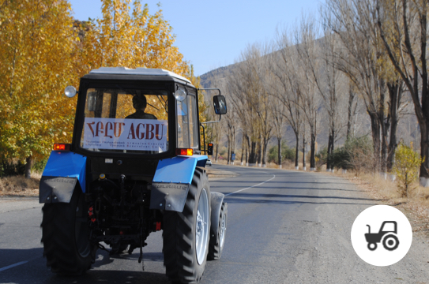
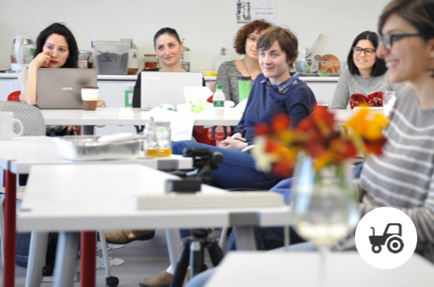
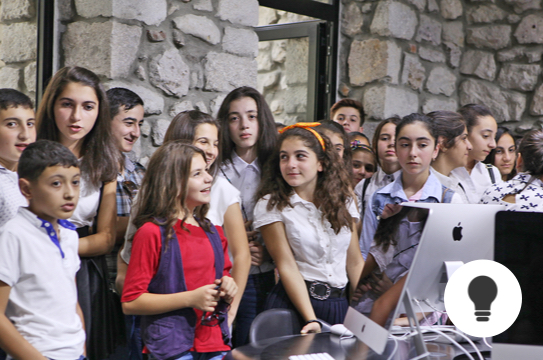
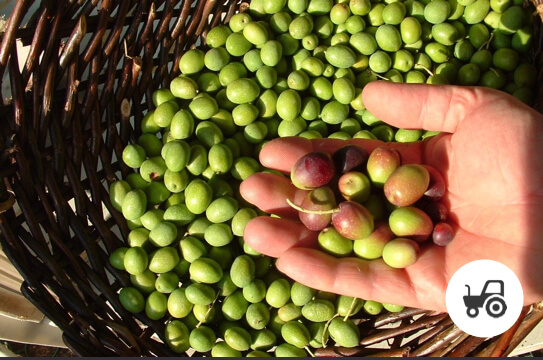
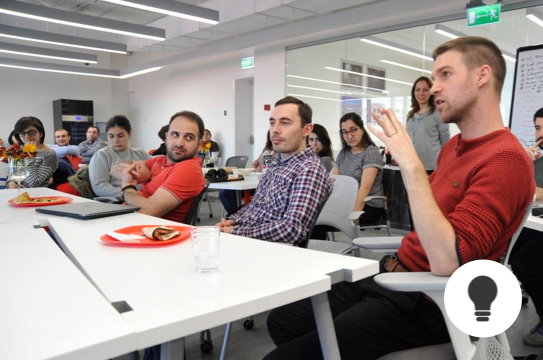

AGBU Fields of Hope
Local farmers receive revolving loans for seeds sown on government-allotted lands,
along with use of farming equipment and a storage facility.

AGBU Women’s Empowerment Program
A full year’s cycle of support for female entrepreneurs, including business training, mini-grants,
expert advisors, mentors and networking opportunities.

TUMOxAGBU Artsakh
This afterschool program for creative technologies, which AGBU fully funds in Stepanakert, gives students a
chance to catch up with peers in Armenia and abroad.
Emergency Medical Support
AGBU has stepped up its medical relief efforts for those in harm’s way with ventilators for artificial respiration,
digital X-ray machines and intensive care devices for air transport, etc.

Artsakh Chamber Orchestra
Since 2004, this 20-member orchestra has built a sterling reputation in the Caucasus, accepting concert engagements
around the world and paving the way for a new music school in Artsakh.

AGBU Olive Tree Orchard Program
Artsakh’s climate and soil are ideal for these cold and drought-resistant trees which
can thrive for hundreds of years and drive new markets for olive-based products. In the
first year of this AGBU pilot program, farmers start out with 6400 young trees, enough
to cover 16 hectares of land. Additional trees are added in subsequent years.
AGBU Scholarship Program
Top performing students are awarded scholarships for undergraduate
or graduate studies and can participate in the AGBU Summer Internship Program.
Enhanced Training for Military Personnel
AGBU offers scholarships for cadets and officers enrolled in leadership and English
language courses through the AGBU- AUA Continuing Education Program.

AGBU Continuing Education Program
Developed in partnership with the American University of Armenia (AUA), this world class
program offers certificate programs, professional courses, and college prep classes.